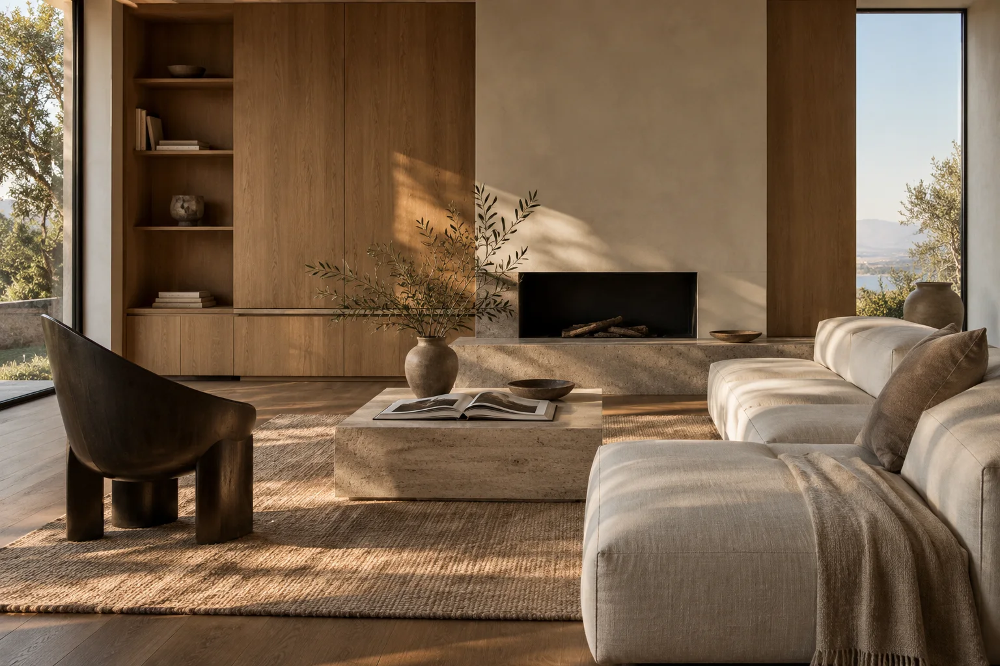

Rooms shaped
around living.
A small interiors studio concept considering light, proportion, and the rituals of a home.

Northline is a fictional interiors studio. Quiet House is an imagined, AI-generated concept scene created for this website example.
Explore the studio approach